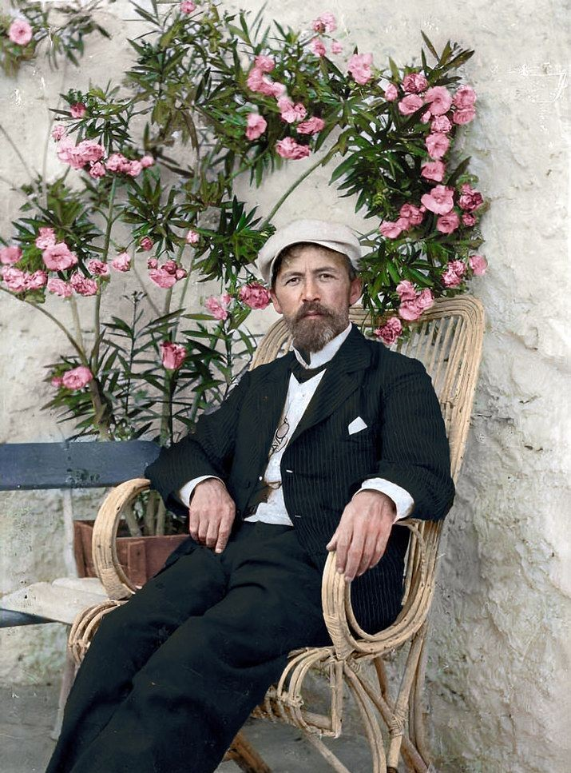

Anton Pavlovič Čehov (1860–1904) jedan je od najznačajnijih ruskih pisaca i dramatičara. Poznat je po kratkim pričama i dramama kao što su Ujka Vanja i Višnjik. Po obrazovanju je bio ljekar, a pisanjem se bavio uporedo sa medicinom.
Ovaj sajt je posvećen A. P. Čehovu. Ovdje možete pronaći njegovu biografiju (O temi), pogledati fotografije (Galerija), otvoriti interaktivnu sliku (Mapa slike) i pogledati ponudu knjiga (Online prodavnica).
Autor sajta: Mariia Kasiankova
Izvor podataka o biografiji: Anton Pavlovič Čehov – biografija